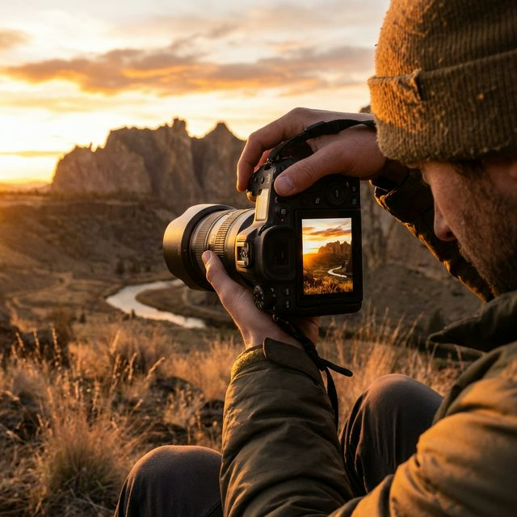
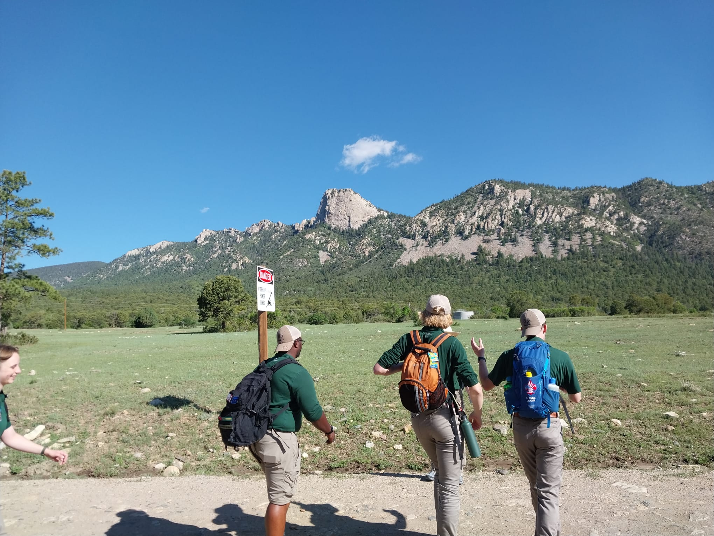

Get to know me better - my passions, interests, and goals!

[Write your detailed hobby story here. Start with how you got interested in this hobby. Make it personal and engaging. Share specific experiences or memories. 3-5 paragraphs total.]
[Second paragraph: What do you love most about this hobby? What have you learned? Share achievements, challenges you've overcome, or skills you've developed.]
[Third paragraph: How has this hobby impacted your life? Has it influenced your career goals or personal development? What are your future goals with this hobby?]

My family was always a very outdoorsy group of people, hiking and camping. So from a young age I've always been amazed by the outdoors. The biggest thing that got me into hiking was a trip I made with the Boy Scouts of America to Philmont Scout Ranch in 2021(the picture above is me working at this camp in 2025!). I took a 12 day backpacking trip with my unit, and I fell in love with backpacking and ever since I've been striving to get out there as much as I can.
One thing about hiking that I enjoy is that you don't have to beat anyone to reach an acheivement. You achieve completion of the hike as a group, and you all work together to reach that. Backpacking with a group has helped me learn that you are only as strong or fast as your weakest link, and to use my strengths to help that link become stronger.
[How does this hobby connect to your life goals? Future plans? What have you learned that applies to your career?]
I'm actively pursuing opportunities with innovative organizations where I can apply my skills and grow professionally.
Website: [www.company-website.com]
Location: [City, State]
Careers: [www.company-website.com/careers]
[Write 3-4 sentences explaining WHY you want to work at this company. Be SPECIFIC - don't just say "it's a good company" or "great reputation." Good reasons to mention: - Their innovative products/services - Their company values align with yours - Their impact on the industry - Opportunities for growth and learning - Specific projects or initiatives they're working on - Company culture and work environment ]
[Write 3-4 sentences explaining what makes YOU a good fit for this company. Things to mention: - Relevant skills from your major (web development, data analysis, etc.) - Related coursework (MIS 2201, database management, etc.) - Relevant work experience or internships - Projects you've completed (like this website!) - Technical skills (HTML, CSS, JavaScript, SQL, etc.) - Soft skills (communication, teamwork, problem-solving) - Certifications or awards BE SPECIFIC and CONFIDENT! ]
Website: [www.company-website.com]
Location: [City, State]
Careers: [www.company-website.com/careers]
[Same as Company #1 - write 3-4 specific sentences about why you want to work at this second company. Research the company and be genuine.]
[Same as Company #1 - explain what makes you qualified. Tailor this to the specific company and the types of roles they offer. Be specific about YOUR skills and experiences.]
[Brief explanation of how this value guides you]
[Brief explanation]
[Brief explanation]